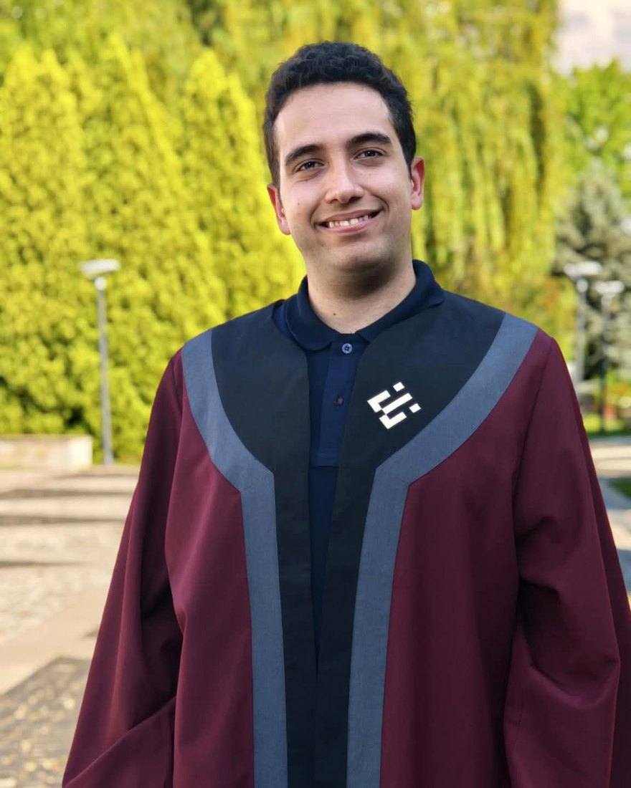

İTÜ2026 — 2030
Istanbul Technical University
Ph.D. in Computer Engineering 1st year
I build computer vision systems
Deep learning researcher focused on computer vision — from image matching and 3D reconstruction to scalable, production-ready MLOps.
End-to-end F1 score
RetailGlue
Faster than dense
matchers (RoMa v2)
Publications
CVPR W · JVCI · SIU
First prizes
SIU 2026 · ESTÜ Fair
B.Sc. GPA
2nd in Faculty

I'm a deep learning enthusiast with a strong focus on computer vision and a deep curiosity for modern architectures.
I enjoy diving into the latest research and experimenting with innovative approaches to complex visual problems. Alongside model development, I have hands-on experience with MLOps workflows, which helps me build scalable, production-ready AI systems. I thrive in environments that encourage learning, research and continuous improvement.
Ph.D. in Computer Engineering 1st year
B.Sc. in Computer Engineering
Second in the Faculty of Engineering
Eskişehir Technical University
REM People
REM People
TÜBİTAK 3501 Program
ACD Data Engineering
Click any card for the full story.
Repetitive shelf environments make classic stitching drift catastrophically: every can of soda looks like every other can of soda. RetailGlue flips the problem with an inverted detect-then-match architecture.
We also co-created a new benchmark dataset. The work was accepted to the CVPR Workshop on Image Matching and Local Features.
An end-to-end computer vision system for military aircraft part recognition and visual similarity search.
The project won First Place in the Computer Engineering Project Competition and the undergraduate poster competition at IEEE SIU 2026.
Fisheye lenses bend straight lines and squash objects near the edges, so rectangular boxes become a poor description of what's actually there.
Published in the Journal of Visual Communication and Image Representation, 104798, 2026.
A search engine that lets you query aviation archives with natural language and images, built on multimodal embedding models.
Published in the Proceedings of LIFT UP 2025–2026 Projects, Turkish Aerospace Industries, 2026.
Proceedings of the IEEE/CVF Conference on Computer Vision and Pattern Recognition (CVPR) Workshops, 2026.
Journal of Visual Communication and Image Representation, 104798, 2026.
Signal Processing and Communications Applications Conference (SIU), 2026.
Proceedings of LIFT UP 2025–2026 Projects, Turkish Aerospace Industries, 2026.
Tap a card for a little celebration and the photo album behind it.
Image processing, object detection, segmentation, image stitching, keypoint & pose estimation, 3D reconstruction.
Supervised & unsupervised learning, transfer learning, metric learning, fine-tuning, Transformers.
MLflow, DVC, TorchServe, ONNX, Flask, FastAPI, Docker, Git, AWS, reproducible pipelines.
PyTorch, TensorFlow, OpenCV, NumPy, Pandas, SciPy, scikit-learn, Matplotlib, Seaborn.
Open to research collaborations, computer vision projects and a good conversation about modern architectures.